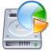
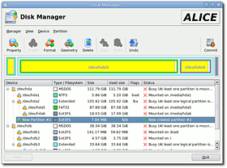

Disk Manager (Partitionierung)
Archivierte Anleitung
Dieser Artikel wurde archiviert, da er - oder Teile daraus - nur noch unter einer älteren Ubuntu-Version nutzbar ist. Diese Anleitung wird vom Wiki-Team weder auf Richtigkeit überprüft noch anderweitig gepflegt. Zusätzlich wurde der Artikel für weitere Änderungen gesperrt.
Dieser Artikel wurde für die folgenden Ubuntu-Versionen getestet:
Dieser Artikel ist mit keiner aktuell unterstützten Ubuntu-Version getestet! Bitte diesen Artikel testen und das getestet-Tag entsprechend anpassen.
Zum Verständnis dieses Artikels sind folgende Seiten hilfreich:

Disk Manager  ist eine Qt-basierte grafische Benutzeroberfläche für GNU Parted. Das Programm ist noch sehr jung und befindet sich noch in einer frühen Entwicklungsphase. Daher ist bei der Benutzung noch Vorsicht geboten, besonders deshalb, weil ins System eingegriffen wird und Datenverlust droht.
ist eine Qt-basierte grafische Benutzeroberfläche für GNU Parted. Das Programm ist noch sehr jung und befindet sich noch in einer frühen Entwicklungsphase. Daher ist bei der Benutzung noch Vorsicht geboten, besonders deshalb, weil ins System eingegriffen wird und Datenverlust droht.
Disk Manager ist eine optisch ansprechende Alternative zum bekannteren QtParted. Mit dem Programm lassen sich derzeit 13 unterschiedliche Dateisysteme bearbeiten. Es unterstützt u.a. die folgenden Funktionen: Partitionen anlegen, formatieren, Größe ändern, verschieben und löschen.
Installation¶
Da das Programm noch nicht lange existiert, gibt es auch noch kein fertiges Ubuntupaket davon. Daher muss man Disk Manager selbst kompilieren. Dazu müssen zunächst viele Entwicklerpakete und weitere Pakete installiert [1] werden. Dabei werden auch sehr viele weitere abhängige Pakete automatisch mitinstalliert. 
xorg-dev
libjpeg62-dev
libqt3-mt-dev
kdelibs4-dev
hwinfo (universe, [2])
libqt3-compat-headers
libhd13-dev (universe)
libparted1.8-dev
libtool
e2fslibs-dev
uuid-dev
Paketliste zum Kopieren:
sudo apt-get install xorg-dev libjpeg62-dev libqt3-mt-dev kdelibs4-dev hwinfo libqt3-compat-headers libhd13-dev libparted1.8-dev libtool e2fslibs-dev uuid-dev
sudo aptitude install xorg-dev libjpeg62-dev libqt3-mt-dev kdelibs4-dev hwinfo libqt3-compat-headers libhd13-dev libparted1.8-dev libtool e2fslibs-dev uuid-dev
Nun lädt man das Programm von der Homepage  herunter und entpackt [4] das Archiv in sein Home-Verzeichnis. Anschließend öffnet man ein Terminal [3], wechselt darin in den soeben entpackten Ordner und kompiliert [6] das Programm nach dem bekannten Schema. Wenn alles klappt, kann man das Programm nun mit dem Befehl
herunter und entpackt [4] das Archiv in sein Home-Verzeichnis. Anschließend öffnet man ein Terminal [3], wechselt darin in den soeben entpackten Ordner und kompiliert [6] das Programm nach dem bekannten Schema. Wenn alles klappt, kann man das Programm nun mit dem Befehl
sudo diskman
starten [5]. Wichtig ist hierbei, dass das Programm nur mit Rootrechten genutzt werden kann, da sich hiermit administrative Eingriffe ins System vornehmen lassen. Nutzt man das KDE-Programm unter GNOME, kann man sich natürlich auch mit dem Menüeditor [7] einen entsprechenden Starter anlegen. Unter KDE sollte dieser schon vorhanden sein.
Benutzung¶
Die Oberfläche ist zwar nur in englischer Sprache verfügbar, jedoch ist die Benutzung durch die klaren Symbole und Beschriftungen relativ einfach. In einer Tabelle stehen, ähnlich der Anordnung in einem Dateimanager, alle vorhandenen Partitionen untereinander. Wie unter Linux üblich, lassen sich die Partitionen nur dann bearbeiten, wenn sie nicht ins Dateisystem eingehängt (gemountet) sind. Dies wirs zum einen in der Spalte "Status" angegeben und zum anderen ist bei allen Partitionen, die sich zur Zeit nicht bearbeiten lassen ein kleines Schloss im Symbol eingefügt. Weiterhin gibt es noch Spalten für die Angabe des verwendeten Dateisystems (Filesystem), der Größe der Partition (Size) sowie der Größe des belegten Platzes (Used Size).
Achtung!
Disk Manager speichert alle Änderungen (siehe unten) erst in einem Zwischenspeicher und führt diese erst dann aus, wenn man auf "Commit" klickt. Ist "Commit" ausgeführt, lassen sich die Änderungen nicht mehr rückgängig machen! Daher sollte "Commit" nur ausgewählt werden, wenn man sich bei den Änderungen sicher ist. Im schlimmsten Fall sind alle auf der Festplatte gespeicherten Daten verloren!
Symbolleiste¶
Die Symbole aus der Symbolleiste von Disk Manager haben die folgenden Funktionen (von links nach rechts):
| Disk Manager - Symbolleiste | ||
| Symbol | Text | Funktion |
| "Property" | Zeigt zusätzliche Informationen zur ausgewählten Partition an. | |
| "Create" | Eine neue Partition anlegen. Dazu muss ein unformatierter Bereich existieren. | |
| "Format" | Eine bestehende Partition neu formatieren. | |
| "Geometry" | Größe der gewählten Partition ändern oder die Partition verschieben. | |
| "Delete" | Entfernt die komplette Partition und gibt dadurch einen unformatierten Bereich frei. | |
| "Copy" | Kopiert die Partition in einen Zwischenspeicher. Dazu muss genügend freier Speicherplatz vorhanden sein. | |
| "Paste" | Fügt die kopierte Partition an der ausgewählten Stelle wieder ein. | |
| "Undo" | Macht die letzte Auswahl rückgängig (nur solange die Änderungen noch nicht übernommen wurden). | |
| "Commit" | Alle ausgewählten Änderungen für die Festplatten/Partitionen übernehmen. | |
Achtung!
Durch falsches Setzen des Boot-Flags kann der Computer unter Umständen nicht mehr gestartet werden!
Menüs¶
Über die Symbolleiste können fast alle Arbeiten vorgenommen werden. Die Menüs bieten nur wenige zusätzliche Funktionen. Im Menü "Manager" kann man die Ansicht aktualisieren (Refresh) sowie die letzte Aufgabe (Undo) oder alle Aufgaben rückgängig machen (Reset all changes). Dies funktioniert aber nur, so lange man die Aufgaben noch nicht mit Commit (ebenfalls in diesem Menü vorhanden) bestätigt hat.
Das Menü "View" enthält das aus der Symbolleiste bekannte "Property", mit dem sich Informationen über die Partition anzeigen lassen. Außerdem kann man mit "Harddisk" zwischen den Festplatten umschalten (sofern mehrere vorhanden sind). Wichtig kann die Anzeige der geplanten Änderungen (Pending Operations) sein. Features schließlich zeigt in Tabellenform, welche Operationen sich auf welchem Dateisystem ausführen lassen.
"Device" enthält bisher lediglich den Menüpunkt "Disklabel". Hier kann man den Namen der Partition anlegen, allerdings nur, wenn sie nicht eingehängt ist. Außerdem steht die Funktion nicht für alle Dateisysteme zur Verfügung.
Im Menü "Partition" findet man fast alle Funktionen aus der Symbolleiste wieder. Zusätzlich enthält es noch die Funktion "Check", mit der sich Partitionen auf Fehler überprüfen lassen. Dies funktioniert jedoch auch nicht mit allen Dateisystemen.
- Erstellt mit Inyoka
-
 2004 – 2017 ubuntuusers.de • Einige Rechte vorbehalten
2004 – 2017 ubuntuusers.de • Einige Rechte vorbehalten
Lizenz • Kontakt • Datenschutz • Impressum • Serverstatus -
Serverhousing gespendet von